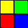
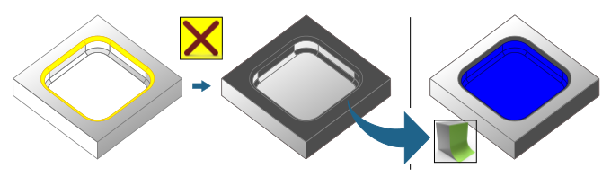

Smart interactive coloring
Color faces interactively. → → → | Advanced |
Color faces interactively.
Count colors: Select how many colors are displayed for selection within the dialog.
Alternating colors: Always use the next color for each action. Start again with the first color after the last available color.
Filter: Make selecting less prone to error. If known, restrict the selection to certain geometric shapes, for example, only faces or only curves.
Selection constrain: Select Single selection, Tangentially, Fillet, Chamfer, Coplanar or Limited as the default selection option for the dialog. All selection options are offered when All is selected. Different parameters are offered, depending on the selection condition. Also see Dialog during the script run.
Design image field
Each color can be assigned its own image. Right-click to open a menu in a color line:
- Import image
Insert an existing image in the format
*.png,*.jpgor*.gif(also animated GIFs).- Modify image
Modify the image with Microsoft© Paint©.
- Delete image
Remove the own image. The original, preset image is displayed again.
A preview is displayed for the last imported image. Inserting a snapshot of the graphics area is not possible.
Dialog during the script run
During the script run, a dialog opens in which faces are selected interactively based on the defined criteria. The dialog opens with the selection option preset in Selection constrain.
 | Select color. To do this, click one of the color faces offered. The number of color faces offered depends on the setting in Count colors. The appearance of the icon varies accordingly. |
Single selection. Select a single face or color all preselected faces. The appearance of the icon varies according to the current color. | |
Color faces in the course of a constant fillet within a solid or a face model. Select a face within the fillet. Example 80.  Min. radius / Max. radius: Limit the course of the required fillet faces further by specifying a minimum and a maximum radius. | |
Color faces in the course of a constant chamfer within a solid or a face model. Select a face within the chamfer. Example 81.  Max. length / Min. length / 45 Degree: Limit the course of the required chamfer faces by specifying a maximum and a minimum diagonal length | |
Color faces that are ‘linked’ with a tangential transition within a solid or a face model. Select a face within this composite of faces. Example 82.  Angular tolerance: A value in degrees for controlling whether or not two faces are tangent to each other. | |
Color coaxial faces within a solid. Select a face with the required rotation axis. Example 83.  Angular tolerance: Maximum permissible deviation of the angle of the rotary axis of a face from the axis of the face that is clicked first. | |
Color coplanar faces. Select a face within the required plane. Example 84.  Linear tolerance: Maximum permissible distance to the face that is clicked first. | |
Color up to the edge resulting from hidden faces. | |
Enable all used colors. | |
Switch on/off or show/hide the entities of the current color. The appearance of the icon varies accordingly. Example 85.  | |
Undo coloring steps. |